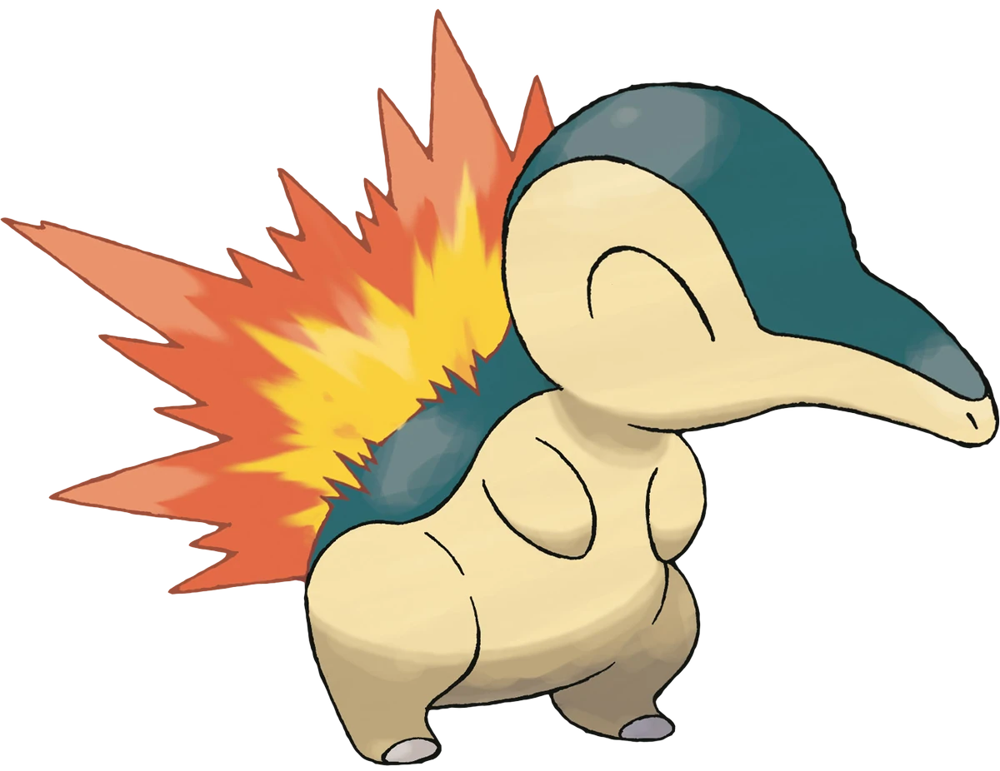

<body>
    <main>
        <!-- 상단 바 -->
        <div class="top">
            <p>포켓몬 도감 등록 완료!</p>
        </div>

        <!-- 메인1 - 포켓몬 이미지와 조원 소개 -->
        <div class="main">
            <div class="mainImg">
                
            </div>
            <div id="teammate">
                <div id="mate_name">
                    <h2> 테스트</h2>
                </div>
                <div id="mate_content">
                    <p> 테스트 </p>
                </div>
            </div>
        </div>

        <!-- 하단 바 -->
        <div class="down">
            <div>
                <!-- 먹이 주면 포켓몬 위아래로 살짝 흔들림 -->
                <!-- 작동 안 되는 중 -->
                <button class="downBtn" id="feed">먹이를 준다</button>
                <!-- 조원 블로그와 깃허브 주소가 나오는 모달 창 열림 -->
                <button class="downBtn" id="showDetail">자세히 본다</button>
                <!-- 화면 닫기 -->
                <button class="downBtn">놓아준다</button>
            </div>
        </div>

        <!-- 자세히 본다 누르면 주소 알려주는 모달창 -->
        <div id="detail_modal">
            <div id="modal_popup">
                <p> 블로그 : https://bb201802.tistory.com/</p>
                <p> 깃허브 : </p>
                <button id="modal_close"> 닫기 </button>
            </div>
        </div>
    </main>


    <!-- jquery 연결 -->
    <!--
    <script src="https://code.jquery.com/jquery-3.7.1.slim.min.js"/
        integrity="sha256-kmHvs0B+OpCW5GVHUNjv9rOmY0IvSIRcf7zGUDTDQM8=" crossorigin="anonymous"></script>

    <script>
        // 자세히 본다 클릭 시 모달창 등장
        document.querySelector('#showDetail').addEventListener('click', function () {
            $('#detail_modal').css('display', 'block');
        });

        // 닫기 누르면 모달창 꺼짐
        document.querySelector('#modal_close').addEventListener('click', function () {
            $('#detail_modal').css('display', 'none');
        });
    </script> -->
</body>

</html>